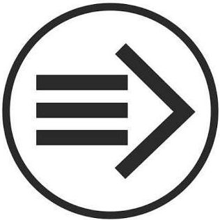

Схематизация
М.Осовский
Главная технология мышления - это его “коллективная сборка”?
В августе 2013 г. на школе по методологии на вопрос, какая сейчас, а также в будущем, может быть наиболее востребованная технология мышления, я отвечал - технология онтологизации.
На вопрос, какой процесс лежит в основе онтологизации, я бы ответил - образование. Буквально - образование целостной картины мира.
Продолжая эту цепочку, спрашивая себя, какая технология главная в процессе образования [как вероятнее всего постичь мир] я бы сказал, что это возможно только в результате совместной коллективной деятельности.
Придя таким странным путем к довольно банальному для марксизма выводу о том, что деятельность - это стержневая технология мышления, я снова задаюсь вопросом, что может быть наиболее непроработано и востребовано в “конвейере мышления”.
Что наиболее ценно в автомобильном конвейере? Технология вырубки из жести профиля будущего автомобиля или автоматизированная технология приклеивания лобовых стекол на свареный каркас?
Дерзко увидеть порядок в хаотичном порыве праисторических сперматозоидов к освоению межгалактического пространства, который описывается на протяжении тысяч лет, как промысел богов и торжество духа в человеке?
Руководствуясь тем, что в 1961 году в статье "Технологии мышления" Г.П.Щедровицкий указывал метод, которым необходимо двигаться - "содержательный анализ мышления", я полагаю необходимо представить мышление, как связанный сценарий “мышление - коммуникация - деятельность”.
Например, представляя деятельность, мы можем схематизировать ее, как несколько взаимосвязанных процессов, таких как планирование, исследование, проектирование, прототипирование, моделирование, организация производства, разделение труда, снижение затрат, замещение конечного продукта денежными знаками и тп.
Представляя процессы мышления, мы будем описывать их, как сценарии интериоризации, искажений чувственного и смыслового отражения, воображения и тп., соединяя их с процессами общения и деятельности.
Представляя коммуникацию, мы должны положить процессы сообщения, экстериоризации, процессы замещения знаками и действиями передаваемого в коммуникации смысла, появления языка, понятий и тп., , соединяя их с процессами мышления и деятельности.
На полях замечу, что рядом с каждым из этих процессов идет “игра”, как способ коллективного прототипирования и тестирования деятельности или какой-нибудь другой целостной действительности.
Таким образом, коллективное представление игрового поля и списка ключевых ролей (морфологическая структура), базовых сценариев (функциональная структура), коллективный бросок мысли вперед (поиск цели), что все вместе, вероятно, раньше принималось за “управление” и управляемый лидерами процесс, это те элементы, от перестановки которых будет меняться длина конвейера и его эффективность.
Мой вариант ответа на 15 октября, главная технология мышления - искусственный монтаж “конвейера мышления”, сборка в одном времени и в одном месте морфологической и функциональной естественной структуры процессов мышления-коммуникации-деятельности.
15 октября 2013 г.
Обновление страницы:
